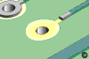
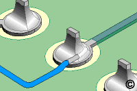
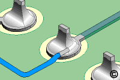

CIRCUIT BOARD REPAIR, INFO, PICS &
DIAGRAMS
(Pay attention!)
SOLDER GUIDE WITH TOOLS
NEEDED
POWER CORD (Recall)
- What really
is wrong with the Xbox for V1.0 and V1.1
LPC BUS PINOUT
CONTROLLER PORT PINOUT
SAMPLE REPAIRS
[ACTUAL]
DAMAGE SAMPLES
[ACTUAL]
DESOLDER
METHODS/DEVICES
PIC16LC63A
MICROCONTROLER
REPAIR PART VALUES
So, you damaged your mainboard while installing your
MODCHIP? Well, don't get too upset, you can fix it, and it's not
all that hard. First of all, you should only be using a 35watt
soldering iron, and thin rosin core solder, like 24guage size.
Damage to the traces and/or pads are usually due to excessive heat,
that is, heat kept on the trace or pad too long, or the soldering iron
is too hot (more than 35watts). The other way they become
pulled up or damaged, is if you are putting tension on the wire you are
soldering to the pad, and the pad lifts up as the solder
cools.
The thing with pads being lifted or damaged, is there is a connection
on the bottom side of the mainboard through that pad. If the pad is
unrepairable, you can simply jumper to the other side of the mainboard
as well.
The LPC bus is no different, it consists of pads and traces leading to
those pads. VISIBLE traces can always be replaced with jumper
wire.
Traces in the middle of, three, or more layered mainboards, can't be
fixed. Most PC motherboards today are more than two
layers. As far as I know, the Xbox mainboard is a four layer
board. You can only fix what you can see.
The images below show many different methods of running jumpers,
and under what conditions they're run. All the pictures below can
help you repair a bad or broken trace or pad. Remember this:
Jumper wires fall into three (3) categories:
- Those that are considered wires, and are
installed
during assembly.
- Those that are added after assembly to
effect a change or modification.
- Those that are added to correct a defect.
 This jumper wire came from a broken
trace to
This jumper wire came from a broken
trace to
this pad that is filled in to tac the other end of
the jumper wire to it.
This method can also be used for a damaged
pad, the left side being damaged. Fill the pad in
then use a jumper.

Those are the most common way the pads are damaged.
1. Lifted Pad 2. Broken
Pad 3. Trace to pad damage
 This surface mount
part, be it a capacitor or
This surface mount
part, be it a capacitor or
a resistor has lifted UP off the trace. Notice
the jumper that has replaced the trace that
went to the part originally. You can also
jumper it from the top, down to the pad
or adjoining trace. This method is the shortest
distance to the part.
The trace to this component was
damaged.
There we see the jumper to the part. This
jumper can be from the destination pad, or
where the break is in the trace. As you can
see, the jumper does not overlay the original
trace, and is not neccessary. The shortest route
is taken.

This method of trace repair to the component
is also acceptable, and is how most modchip
jumper wires are conencted, as a parallel
connection, to the resistor of the Eject LED.
Note: Say this part, a resistor, was damaged.
We'll also say current flows from
the
left side, through to the right. You would solder a jumper, with
the same
vaule resistor in the jumper, and then solder to the RIGHT
side of the
resistor in the picture. Then you would then cut the trace just
before the LEFT side, to assure there is no future short or connection,
as
that would PARALLEL your jumper. You can also solder one
lead
of the added resistor directly to the RIGHT side, then the jumper wire
from the other lead of the
added resistor to the originaing pad or trace.
If a component leg or lead has lifted from the pad
you can solder a jumper to the leg. This also
works if you had to clip the leg or the leg broke
off, and there is a piece left to solder a jumper
to, it would just be a smaller area. It is not
recommended you go up OVER the component,
as heat will eventually damage the jumper.
BELOW are more examples of jumpers used in many other situations that
can occur with heat damaged, and/or lifted pads and traces to other
components.
 

Broken trace to chip
leg.
Other side of board,
jumper Another jumper.
Broken Leg of a component.
Broken trace
jumpered to leg.
This
example shows how to route
jumper wires in an XY manner as directly as feasible, with as few bends
as possible:
If you need to go through a plated
hole, where you are only using it as a shortcut to the other side of
the mainboard, further insulate the wire. You can drill the
plating out if it is not a ground point, or are no traces leading to it.
The above represantation is also like the holes in the LPC bus, and
other solder pads on the main board, they're just smaller. The
solder flows from the soldered side, to the other; which in turn
connects all traces that end up at the pad, both top, bottom, and any
layers in between. So you can see why damaging a pad can
effect anything that is connected to it.
Use TapeDots to keep the wires in place:
CONTROLLER PLUG
PINOUT:
From right to left:
1 2 3 4 5
1 - +5V
2 - D-
3 - D+
4 - ??
5 - GND
Pins "1" and "5", like normal USB plugs, they are slightly longer
than the other pins. This makes sure that power/GND signals get
connected first when you insert a connector, assuring a solid power
connection before any of the other signals get connected.
Pins 1 & 5 are common across all 4 controller plugs/connectors.
Pins 2&3 (USB D-/D+ differential data lines) are separate pairs to
each port.
here's where each ports' D+/D- signals connect onto the TI USB
chip:
D+/D- LINES TO THE T.I. USB
CHIP:
Port 1's D+/D- go to TI's
"DP3/DM3" pins.
Port 2's D+/D- go to TI's
"DP4/DM4" pins.
Port 3's D+/D- go to TI's
"DP1/DM1" pins.
Port 4's D+/D- go to TI's
"DP2/DM2" pins.
PIN 4 is not common across all four ports.
LPC BUS PINOUT:
15 = Power was
removed from V1.5 Xbox
02 = Ground was removed from V1.5 Xbox
POWER CORD RECALL:
The power cord
on the Xbox was recalled for earlier version Xbox. However, it is
NOT fault in the power cord that is the problem, in fact, it is
the power connector part soldered to the main board.
The diagrame to the left,
there are two circles areound the solder joints. Inspect the AC
plug where it is connected to the PSU circuit board.
Look for signs or electrical arcing, burn marks, etc.
Look for loose solder connections.
If this is the case, clean and resolder connection, THEN replace power
cord.
With the newer
xboxes, you get a replacement power cord that doesnt look any
different. Why? Because theres nothing wrong with the cord, at all.
All of you with a 1.0 or 1.1, I would HIGHLY suggest checking to see if
you have a foxlink PSU, and if you do, to resolder these 2 joints, a
huge blob on them seems to fix the problem.
So,
instead of taking the costly duty of recalling all older xboxes,
what does M$ do? They instead, give you a power cord with this huge
Ground Fault Inturrupt (GFI) device.
This does not solve the root problem. All it does is trip a breaker
when the conenctor on the PSU sparks and shorts out. Your
xbox still doesn't work.
D0 PAD W/ JUMPER REPAIR SAMPLE
See how the pad was
damaged ^
Since there is another pad next to it, this jumper repairs the circuit.
Original damage showed in DAMAGE SAMPLES.
Example of running a jumper from the TOP side to the BOTTOM side.
This happens to be another D0 repair.
DAMAGE SAMPLES
That is what was left after cleaning up a solder splatter!
Typical solder pad damage - Repaired ABOVE in D0 Repair Jumper
Solder platter at one of the RAM chips! This is after a clean up!
D0 Pad damage - Typical - to V1.5 Xbox.
DESOLDER METHODS
SOLDER WIC is the best thing to use to soak up Solder in a
pinch.
You place the solder WIC on the solder, apply the iron to the WIC, and
the solder is soaked up by the WIC.
Experienced users use what is called a "Solderpolt" that sucks up the
solder.
It is a PLUNGER action tube - you push down the plunger, heat the
solder while
the nozzle is by it, press the button, and Thoomp, the solder is sucked
up.
A Desolder Gun/Iron has a vacuum tube, like a surgeon uses suction
during
an operation. The solder is vacuumed up as you apply heat and
melt it.

The PIC16LC63A microcontroller is responsible for handling the Xbox's
power such as powering the unit on, sending the eject signal to the DVD
drive and powering down/resetting the unit.
IF you have repaired the power supply and Xbox still does not respond,
this may be the problem.
Note: if you have a 1.6 motherboard and the unit does not boot up after
doing work on the motherboard then it is most likely because the
standby power regulator transistor has blown. If this is the case you
need the MMBT3906LT1-D transistor. checkout.
RESISTOR
REPAIR PARTS & INFORMATION
If you ruin any of the resistors during the solder process, you can
replace them with standard resistors, using the resistor as a
jumper. There is a nice cluster of resistors in the area where L1
and BT go, so I am listing the part numbers and values for repair.
R2G10 [101] =
10ohms (L1) V1.0-1.2
R3G1-4 [103] = 1Kohms - V1.0-1.2
R3G2 [101] =
10ohms (L1) V1.6
R3G3 [103] =
1kokms (BT) V1.0-1.2
R3G8 [203] = 20K Ohms -
V1.6+